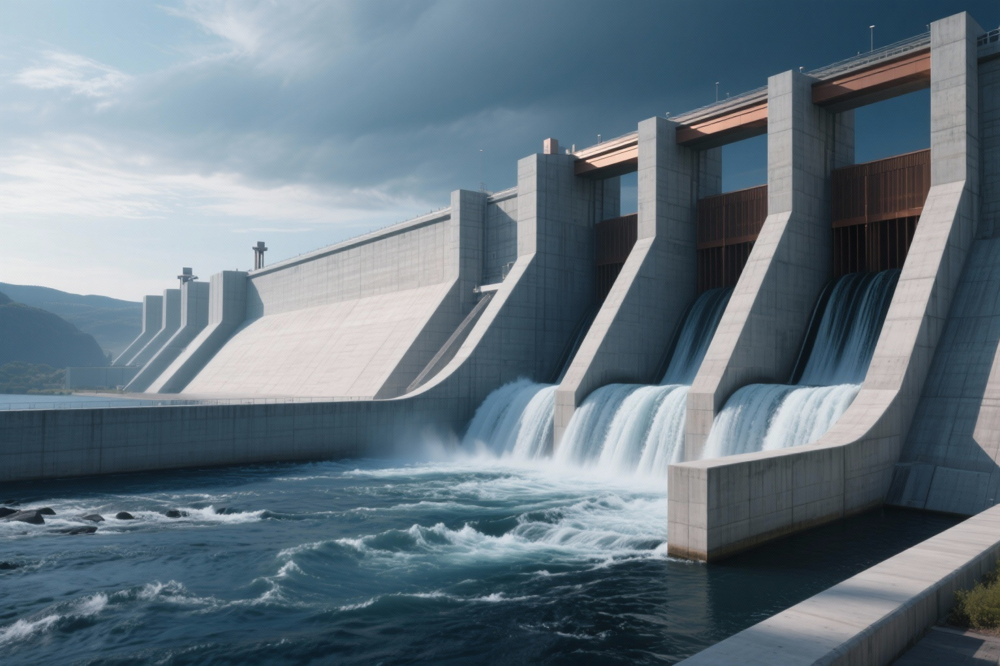

Conception de Barrage
Conception complète d'un barrage en béton gravité avec analyse hydraulique, étude de stabilité et modélisation des écoulements.
Étudiant en 5ème année, passionné par les ouvrages hydrauliques, les infrastructures et les ouvrages portuaires. Je combine expertise technique et rigueur pour des solutions durables.
Étudiant en 5ème année de Génie Civil, option Infrastructures et Ouvrages Hydrauliques à l'UEMF. Je suis à la recherche d'un stage PFE à partir de Février 2026.
Expertise dans les domaines clés du Génie Civil : Béton Armé, Ouvrages Hydrauliques, Routes et Géotechnique.
Motivé, dynamique, rigoureux, je fais preuve d'adaptabilité et d'un bon sens de la résolution des problèmes.
Recherche d'un stage de Projet de Fin d'Études de 3 à 6 mois, à partir de Février 2026, dans les domaines des infrastructures et ouvrages hydrauliques.
Conception complète d'un barrage en béton gravité avec analyse hydraulique, étude de stabilité et modélisation des écoulements.
Modélisation et optimisation d'un réseau de distribution d'eau potable pour une ville de 50,000 habitants avec EPANET.
Conception d'une station de traitement des eaux usées avec processus biologique avancé et récupération d'énergie.
Conception structurelle d'un pont en béton précontraint avec analyse sismique et étude de fatigue.
Système de gestion des eaux pluviales pour zone urbaine avec infrastructure de rétention et infiltration.
Conception d'un canal d'irrigation avec calculs hydrauliques, analyse de régime et structures de régulation.
Ensemble de compétences techniques, logicielles et personnelles développées durant mon parcours d’ingénierie.
Mon évolution académique et professionnelle en quelques étapes clés.
Finalisation des modules de spécialité (barrages, ports, tunnels). Préparation du Projet de Fin d’Études.
Suivi quotidien des travaux, contrôle de la conformité des ouvrages, participation aux rapports techniques et aux métrés.
Dimensionnement des fondations et superstructures en béton armé. Utilisation de GEO5 et Robot Structural Analysis.
Suivi et contrôle des travaux de terrassement, compactage et topographie. Observation des méthodes de fragmentation contrôlée.
Lecture des plans architecturaux et de coffrage, suivi de chantier et réalisation de dessins techniques sous AutoCAD.
Élaboration de plans de coffrage, modélisation de la structure sur Robot Analysis et calculs de ferraillage à l’ELU et ELS.
Acquisition des bases solides en mathématiques, physique et ingénierie. Préparation à l’intégration du cycle ingénieur.
Développement d’une rigueur scientifique et d’une méthodologie de travail appliquée à l’ingénierie.
Intéressé par mes compétences ? Discutons de vos projets d'ingénierie